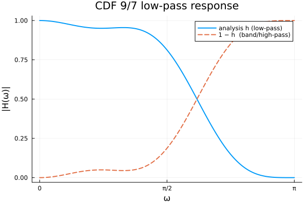
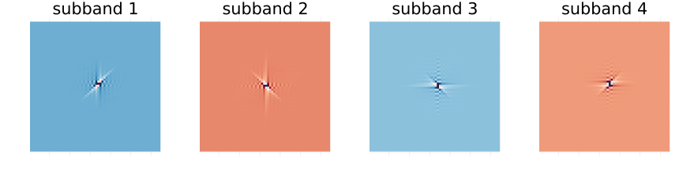
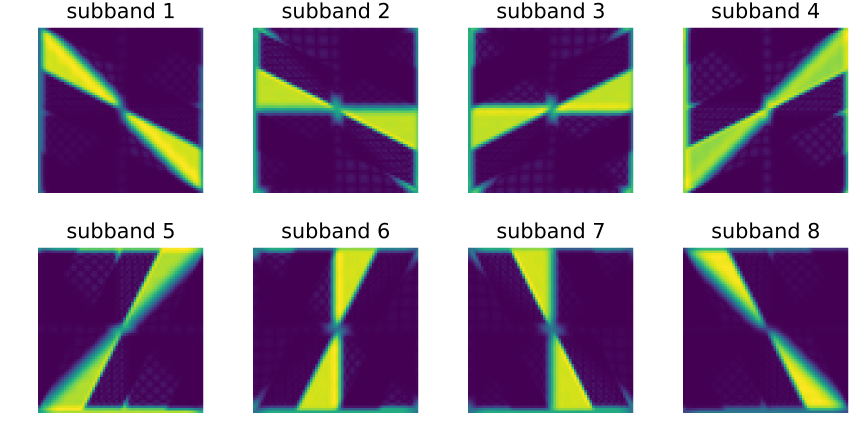
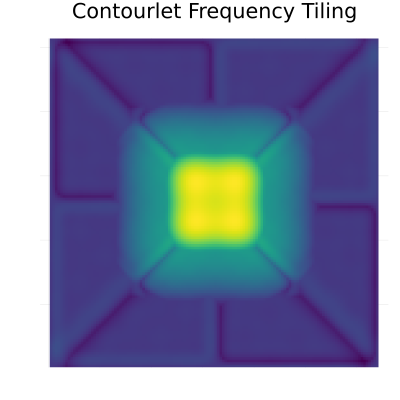
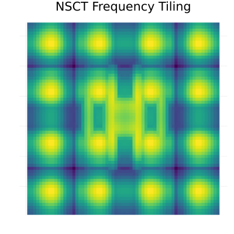

Theory
This page gives a brief mathematical description of the transforms implemented in Contourlets.jl. For in-depth derivations see the primary references listed at the bottom.
Laplacian Pyramid (LP)
The LP provides a multiscale decomposition without aliasing.
Analysis (one level, downsampling factor 2):
coarse = ↓2 · (h ⊛ image)
pred = g ⊛ (↑2 · coarse)
bandpass = image − predSynthesis (exact for any biorthogonal pair (h, g)):
rec = bandpass + g ⊛ (↑2 · coarse) = imageThe default filter pair CDF97 is the CDF 9/7 biorthogonal wavelet used in JPEG 2000. Its analysis low-pass $h$ has unit gain at DC and a null at the Nyquist frequency, so the bandpass image $\text{image} - \text{pred}$ carries exactly the detail removed by the coarse approximation:
ω = range(0, π; length = 400)
dtft(f, c) = [abs(sum(f[n] * cis(-w * (n - c)) for n in eachindex(f))) for w in ω]
plot(ω, dtft(CDF97.h, 5), label = "analysis h (low-pass)", lw = 2,
xlabel = "ω", ylabel = "|H(ω)|", title = "CDF 9/7 low-pass response",
xticks = ([0, π/2, π], ["0", "π/2", "π"]), legend = :topright)
plot!(ω, 1 .- dtft(CDF97.h, 5), label = "1 − h (band/high-pass)", lw = 2, ls = :dash)
Directional Filter Bank (DFB)
The DFB partitions the 2-D frequency plane into $2^L$ directional wedges using a binary tree of two-channel filter banks (Bamberger & Smith 1992; Do & Vetterli 2005). With the default Q2345 pair the implementation follows the ladder construction of the reference contourlet toolbox:
- The first two tree levels use quincunx polyphase decompositions ($Q_1, Q_2$), realised via Smith-factorised resampling matrices.
- Deeper levels ($\ell \ge 3$) use parallelogram polyphase decompositions ($R_1 \ldots R_4$), expanding alternately the "mostly-horizontal" and "mostly-vertical" halves of the tree.
- Each two-channel split is the Phoong et al. (1995) lifting (ladder) network, giving structural perfect reconstruction.
- A final backsampling step makes the overall sampling lattice of each subband diagonal.
Decimation by 2 at every split keeps the DFB nearly critically sampled, and the $2^L$ subbands form genuine directional wedges (the first $2^{L-1}$ capture mostly-horizontal orientations, the rest mostly-vertical). Modulation-mode filter pairs instead use a simpler shear-based tree that is perfect- reconstructing but only weakly directional.
Reconstructing a single coefficient from each subband reveals the directional basis functions — elongated, oriented elements (the anisotropy that lets contourlets trace smooth contours):
N = 64
sbs = dfb_decompose(zeros(N, N), 2, Q2345) # 4 directional subbands
function basis_element(k)
s = [zeros(size(sb)) for sb in sbs]
s[k][size(s[k], 1) ÷ 2 + 1, size(s[k], 2) ÷ 2 + 1] = 1.0
return dfb_reconstruct(s, Q2345)
end
p = plot(layout = (1, 4), size = (860, 220))
for k in 1:4
heatmap!(p[k], basis_element(k), color = :RdBu, title = "subband $k",
aspect_ratio = :equal, axis = false, colorbar = false)
end
In the frequency domain those basis functions occupy complementary wedges that tile the 2-D plane — the directional partition that gives the contourlet its name:
pf = plot(layout = (1, 4), size = (860, 220))
for k in 1:4
spec = log1p.(abs.(fftshift(fft(basis_element(k)))))
heatmap!(pf[k], spec, color = :viridis, title = "subband $k",
aspect_ratio = :equal, axis = false, colorbar = false)
end
The default pair Q2345 is the "23-45" biorthogonal pair of Phoong et al. (1995), realised as a two-step ladder (lifting) network with the 12-tap "pkva" lifting filter. Perfect reconstruction is structural — exact to machine precision ($< 10^{-15}$) at every tree depth. The equivalent analysis and synthesis low-pass filters have 23 and 45 taps respectively, hence the name.
Pyramid Directional Filter Bank (PDFB) — Contourlet Transform
The CT couples J LP levels with one DFB per bandpass:
coarse ← image
for j = 1 … J:
coarse_j, bandpass_j = LP(coarse, h, g)
subbands[j] = DFB(bandpass_j, L_array[j], h_q, g_q)
coarse = coarse_jParabolic scaling chooses the direction count so that the spatial support of directional subbands satisfies the parabolic scaling law $\text{width} \sim \text{length}^2$:
\[L_j = L_{j_0} + \left\lfloor \frac{j_0 - j}{2} \right\rfloor, \quad j = 1, \ldots, J\]
Use parabolic_levels to generate $L_\text{array}$ automatically.
In the frequency domain, the Contourlet Transform partitions the 2-D plane into concentric rings (from the Laplacian Pyramid) which are then subdivided into angular wedges (from the DFB):
N = 128
params = ContourletParams(J=2, L_array=[2, 1])
composite_freq = zeros(N, N)
# Compute frequency response of the coarse low-pass level
c = ct_forward(zeros(N, N), params)
c.coarse[size(c.coarse,1)÷2+1, size(c.coarse,2)÷2+1] = 1.0
composite_freq .= max.(composite_freq, abs.(fftshift(fft(ct_inverse(c)))))
# Compute frequency responses of all directional wedges across both scales
for j in 1:length(c.subbands)
for k in 1:length(c.subbands[j])
c_dir = ct_forward(zeros(N, N), params)
c_dir.subbands[j][k][size(c_dir.subbands[j][k],1)÷2+1, size(c_dir.subbands[j][k],2)÷2+1] = 1.0
composite_freq .= max.(composite_freq, abs.(fftshift(fft(ct_inverse(c_dir)))))
end
end
p_ct = heatmap(log1p.(composite_freq), color = :viridis, title = "Contourlet Frequency Tiling",
aspect_ratio = :equal, axis = false, colorbar = false, size=(400, 400))
Nonsubsampled Contourlet Transform (NSCT)
The NSCT replaces every decimated filter bank with its non-subsampled (à trous) counterpart:
- NSP: at LP level $j$, the filters $h, g$ are replaced by $h_j = h$ upsampled by $2^{j-1}$ (inserting $2^{j-1}-1$ zeros between taps). No downsampling is applied, so all outputs have the same size as the input.
- NSDFB: every decimation is removed. At pyramid level $j$ the directional filters are à trous upsampled by $2^{j-1}$, and each tree depth filters along one of four cycling lattice directions $(0,1), (1,0), (1,1), (1,-1)$. The equivalent analysis/synthesis filters of the ladder network give structural perfect reconstruction at every depth.
All NSP and NSDFB filtering uses periodic (circular) convolution, so the NSCT is invariant under circular shifts: a circular shift of the input produces the same circular shift in every subband, with no redistribution of energy. The cost is redundancy proportional to $1 + \sum_{j=1}^J 2^{L_j}$.
The frequency tiling remains the same as the decimated CT, but every basis element is perfectly shift-invariant. We can visualize the equivalent frequency partition of a 2-level NSCT:
N_nsct = 64
params_nsct = ContourletParams(J=2, L_array=[2, 1])
composite_freq_nsct = zeros(N_nsct, N_nsct)
# Compute frequency response of the coarse low-pass level
c_nsct = nsct_forward(zeros(N_nsct, N_nsct), params_nsct)
c_nsct.coarse[size(c_nsct.coarse,1)÷2+1, size(c_nsct.coarse,2)÷2+1] = 1.0
composite_freq_nsct .= max.(composite_freq_nsct, abs.(fftshift(fft(nsct_inverse(c_nsct)))))
# Compute frequency responses of all directional wedges across both scales
for j in 1:length(c_nsct.subbands)
for k in 1:length(c_nsct.subbands[j])
c_dir_nsct = nsct_forward(zeros(N_nsct, N_nsct), params_nsct)
# In NSCT, every subband is exactly N x N
c_dir_nsct.subbands[j][k][size(c_dir_nsct.subbands[j][k],1)÷2+1, size(c_dir_nsct.subbands[j][k],2)÷2+1] = 1.0
composite_freq_nsct .= max.(composite_freq_nsct, abs.(fftshift(fft(nsct_inverse(c_dir_nsct)))))
end
end
p_nsct = heatmap(log1p.(composite_freq_nsct), color = :viridis, title = "NSCT Frequency Tiling",
aspect_ratio = :equal, axis = false, colorbar = false, size=(400, 400))
References
- M. N. Do and M. Vetterli, "The Contourlet Transform: An Efficient Directional Multiresolution Image Representation," IEEE Trans. Image Process., 2005.
- A. L. da Cunha, J. Zhou, and M. N. Do, "The Nonsubsampled Contourlet Transform: Theory, Design, and Applications," IEEE Trans. Image Process., 2006.
- R. H. Bamberger and M. J. T. Smith, "A Filter Bank for the Directional Decomposition of Images," IEEE Trans. Signal Process., 1992.
- I. Daubechies and W. Sweldens, "Factoring Wavelet Transforms into Lifting Steps," J. Fourier Anal. Appl., 1998.